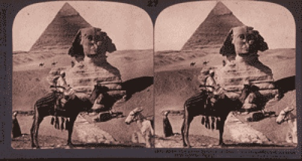

Sacred Texts
Egyptian
Buy this Book at Amazon.com

Stereoscopic photograph of the Pyramids, taken by James Henry Breasted [1908] (Public Domain Image)
Development of Religion and Thought in Ancient Egypt
by James Henry Breasted
[1912]
Contents
Start Reading
Page Index
Text [Zipped]
<MAP NAME="boxmap-p8"><AREA SHAPE="RECT" COORDS="14, 200, 103, 207" HREF="https://rcm.amazon.com/e/cm/privacy-policy.html?o=1" ><AREA COORDS="0,0,10000,10000" HREF="https://www.amazon.com/exec/obidos/redirect-home/internetsacredte" ></MAP><img src="../../../rcm-images.amazon.com/images/G/01/rcm/120x240.gif" width="120" height="240" border="0" usemap="#boxmap-p8" alt="Shop at Amazon.com">
Most of the 19th century work in Egyptology was done by German, French or English researchers. James Henry Breasted (1865-1935) was the first American citizen to get a PhD in Egyptology, at the University of Berlin. In this book, Breasted details the evolution of religious belief through thousands of years of Egyptian history. He describes (and quotes extensively from) the great funerary texts, most importantly the Pyramid texts, as well as the Coffin texts and the Book of the Dead. He covers the history of Egyptian religion from the earliest Osiran beliefs up to the groundbreaking monotheism of Akhenaton. This book is a must-read for anyone interested in Egyptian religion.--J.B. Hare, April 25th, 2009.
Title Page
Preface
Epitome of the Development
Contents
Chronology
Lecture I. The Origins: Nature and the State in their Impression on Religion—Earliest Systems
Lecture II. Life After Death—The Sojourn in the Tomb—Death Makes its Impression on Religion
Lecture III. The Realms of the Dead—The Pyramid Texts—The Ascent to the Sky
Lecture IV. Realms of the Dead—The Earliest Celestial Hereafter
Lecture V. The Osirianization of the Hereafter
Lecture VI. The Emergence of the Moral Sense—Moral Worthiness and the Hereafter—Scepticism and the Problem of Suffering
Lecture VII. The Social Forces make their Impression on Religion—The Rise of Social Reformers—The Earliest Social Regeneration
Lecture VIII. Popularization of the Old Royal Hereafter—Triumph of Osiris—Conscience and the Book of the Dead—Magic and Morals
Lecture IX. The Imperial Age—The World-State Makes its Impression on Religion—Triumph of Re—Earliest Monotheism—Ikhnaton (Amenhotep IV)
Lecture X. The Age of Personal Piety—Sacerdotalism and Final Decadence
Index